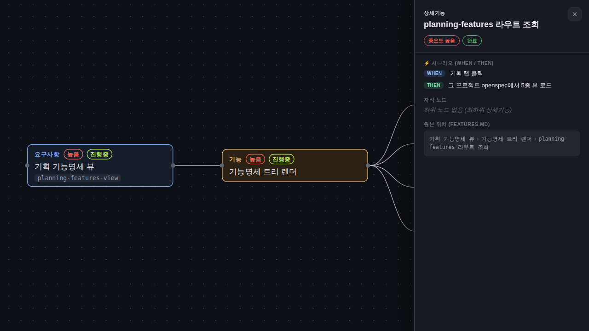
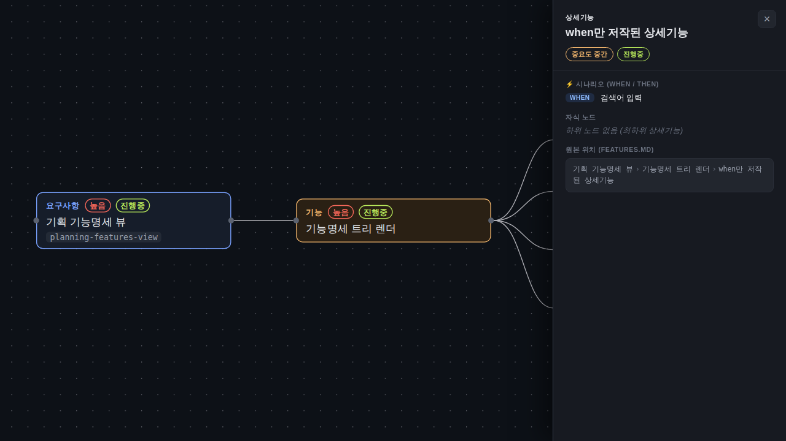
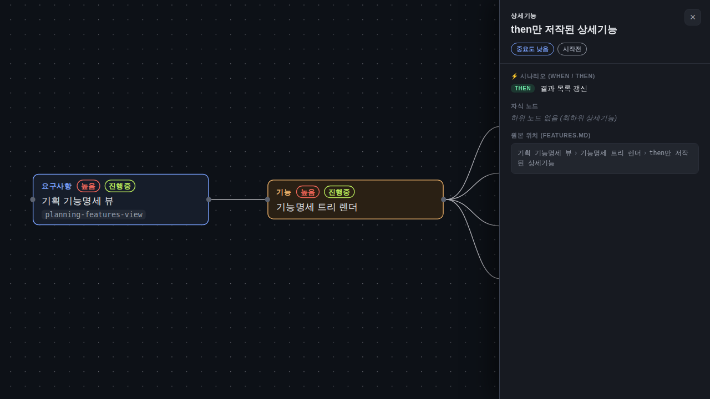
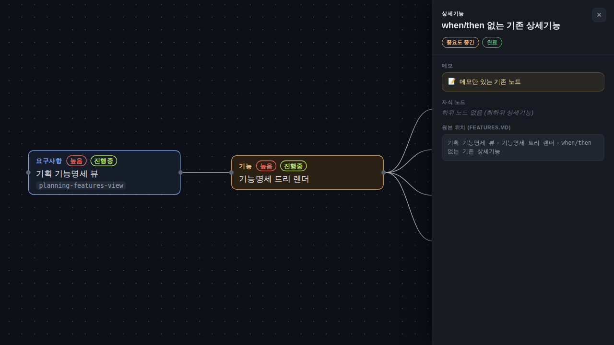

검증일: 2026-07-08T22:15:05+09:00 · 환경: server(jest 재실행 390/390)·web(gstack 실픽셀 4케이스+실경로 E2E) 실행 / android(적용 불가: android 디렉토리 없음)·ios(macOS 필요) SKIPPED · run: run-20260708-2215
PASS 6 · FAIL 0 · 검증 안 함 0 · SKIPPED 0
| Requirement | Scenario | Layer | 검증 수단 | 탐지 근거(basis) | 결과 | 증거 |
|---|---|---|---|---|---|---|
| features 노드는 WHEN/THEN 시나리오를 저작·표시한다 | when/then 저작 → 상세 패널 표시 | web | 격리 픽스처 실픽셀(gstack): det-both 노드('planning-features 라우트 조회') 클릭 → ⚡ 시나리오 섹션에 WHEN '기획 탭 클릭' + THEN '그 프로젝트 openspec에서 5종 뷰 로드' 표시 어서션(.feature-detail-whenthen/.wt-tag.when/.wt-tag.then 전부 visible). 콘솔 에러 0. | web/vite.config.ts + web/index.html; gstack daemon healthy; 픽스처 http://localhost:5299/verify-fixture/whenthen-fixture.html | ✓ PASS |  |
| features 노드는 WHEN/THEN 시나리오를 저작·표시한다 | when/then 저작 → 상세 패널 표시 — 실경로 E2E(docs 원문→파서→API) | server | 실서버 기동(PORT=8819 node dist/index.js) 후 GET /api/docs/flowforge/planning-features → HTTP 200, 응답 JSON에 도그푸딩된 docs/planning/features.md:60-61 주석이 파서를 거쳐 실림(mock 아님). | root=server/; scripts.test → jest; server/dist 빌드 tsc exit 0 | ✓ PASS | GET http://localhost:8819/api/docs/flowforge/planning-features → 200 ... "when":"기획 탭 클릭","then":"그 프로젝트 openspec에서 5종 뷰 로드","children":[] ... (원문: docs/planning/features.md:60-61 <!-- when: 기획 탭 클릭 --> <!-- then: 그 프로젝트 openspec에서 5종 뷰 로드 -->) |
| features 노드는 WHEN/THEN 시나리오를 저작·표시한다 | 한쪽만 있어도 렌더 — when만 | web | 격리 픽스처 실픽셀: det-when-only 클릭 → WHEN '검색어 입력' 표시 + 부정 어서션 .feature-detail-wt-tag.then visible=false(빈 THEN 태그 없음). jest 'WHEN만 있는 노드는 when만 싣고 then 필드는 부재한다' passed. | web/vite.config.ts + gstack; jest featureTreeBuilder.test.ts | ✓ PASS |  |
| features 노드는 WHEN/THEN 시나리오를 저작·표시한다 | 한쪽만 있어도 렌더 — then만 | web | 격리 픽스처 실픽셀: det-then-only 클릭 → THEN '결과 목록 갱신' 표시 + 부정 어서션 .feature-detail-wt-tag.when visible=false. jest 'THEN만 있는 노드는 then만 싣고 when 필드는 부재한다' passed. | web/vite.config.ts + gstack; jest featureTreeBuilder.test.ts | ✓ PASS |  |
| features 노드는 WHEN/THEN 시나리오를 저작·표시한다 | 주석 부재 = 현행 동작 | web | 격리 픽스처 실픽셀: det-none(기존 노드, memo만) 클릭 → ⚡ 시나리오 섹션 부재(.feature-detail-whenthen/.wt-tag.* 전부 false), 기존 섹션(라벨·memo·경로) 온전. jest 'when/then이 없는 노드는 필드 자체가 부재한다' passed + 전체 스위트 390/390(회귀 0). | web/vite.config.ts + gstack; jest 전체 스위트 재실행 exit 0 | ✓ PASS |  |
| features 노드는 WHEN/THEN 시나리오를 저작·표시한다 | (3개 시나리오 공통) 파서 단위 재검증 — jest 6케이스 + 엣지 프로브 4케이스 | server | jest 재실행(JSON 리포터, 파이프 없는 exit): when/then 6케이스(양쪽·when만·then만·부재·공존·빈값) 전부 passed, 총 390/390. 추가 엣지 프로브(dist 대상 임시 노드 스크립트, 레포 무접촉): 경계값 5000자·특수문자(이모지·HTML꺾쇠·따옴표)·비정형(미닫힘 주석 무시)·대량 10000노드 4/4 PASS. | root=server/; scripts.test → jest(devDeps ^29.7.0); featureTreeBuilder.test.ts:241-337 | ✓ PASS | EXIT=0 total: 390 passed: 390 failed: 0 passed | ... `<!-- when: ... -->` `<!-- then: ... -->` 주석을 해당 노드 when/then 필드로 파싱한다(양쪽·모든 kind) passed | ... WHEN만 있는 노드는 when만 싣고 then 필드는 부재한다 passed | ... THEN만 있는 노드는 then만 싣고 when 필드는 부재한다 passed | ... when/then이 없는 노드는 필드 자체가 부재한다(비파괴 옵셔널) passed | ... capability/속성/memo 파싱과 공존하며 서로를 삼키지 않는다 passed | ... 빈 when/then(`<!-- when: -->`)은 무시한다 --- 엣지 프로브(PROBE_EXIT=0) --- PASS 경계값: 매우 긴 when 텍스트(5000자)도 그대로 싣는다 PASS 특수문자/유니코드: 이모지·HTML꺾쇠·따옴표 무손상 PASS 비정형 입력: 닫히지 않은 주석은 무시되어 필드 부재 PASS 대량 데이터: 10000개 상세 노드에서 when/then 정확 적재 |
| Requirement | null | 빈값 | 잘못된타입 | 경계값 | 에러경로 | 동시성 | 대량 | 특수문자 | 판정 |
|---|---|---|---|---|---|---|---|---|---|
| features 노드는 WHEN/THEN 시나리오를 저작·표시한다 | ✓ | ✓ | ✓ | ✓ | N/A | N/A | ✓ | ✓ | ✓ 충분 |
✓=covered · N/A=해당없음(사유 hover) · ✗=missing. happy-path만이면 검증 불충분 → 최종 FAIL 차단.
| Layer | 상태 | ran | passed | failed | 근거/사유 |
|---|---|---|---|---|---|
| server | ✓ PASS | 2 | 2 | 0 | 재실행 390/390 + when/then 6케이스 + 엣지 프로브 4/4 + 실경로 E2E, 전부 exit 0 실측(JSON 리포터 이중확인) |
| web | ✓ PASS | 4 | 4 | 0 | 격리 픽스처 실픽셀 4케이스 전부 PASS, 콘솔 에러 0, 스크린샷 4장 |
| android | – SKIPPED | 0 | 0 | 0 | 적용 불가 |
| ios | – SKIPPED | 0 | 0 | 0 | macOS 필요 |
✓ PASS 통과
archiveGate.open = true (PASS일 때만 true). verify.json이 이 값을 archive 게이트에 전달.
{kind=link}
{kind=link}
{kind=link}
{kind=link}